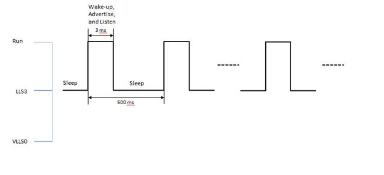

This low-power mode was designed to be used when the BLE stack is active. An example for
a node in advertising is shown below:
Figure 1. Deep Sleep Mode 1 usage example

In this mode, the MCU enters LLS3 and BLE Link Layer enters deep sleep. The SoC wakes up
from this mode by GPIOs configured as wake-up source in
BOARD_LLWU_PIN_ENABLE_BITMAP, LPTMR timeout using LLWU module , or by BLE
Link Layer wakeup interrupt (BLE_LL reference clock reaches wake up instance register)
using LLWU module. LPTMR timer is used to measure the time MCU spends in deep sleep in
order to synchronize low-power timers at wakeup. There are two ways to use this
mode:
- The BLE stack decides it can enter low-power and calls
PWR_AllowDeviceToSleep. If no other software entity prevents the system
from entering deep sleep (all software layers that called
PWR_DisallowDeviceToSleep have called back PWR_AllowDeviceToSleep)
and the system reaches idle task, PWR_EnterLowPower function is entered and
the system prepares for entering low-power mode 1. BLE Link layer status is checked
and found not to be in deep sleep. A function from BLE stack is called to get the
nearest instant at which the BLE Link layer needs to be running again and the wakeup
instant register in the BLE Link layer is programmed with this value. The BLE link
layer is then put in deep sleep and the MCU enters LLS3.
- The BLE stack decides it can enter low-power and calls PWR_BLE_EnterDSM
followed by PWR_AllowDeviceToSleep. In this way the BLE Link layer is put to
deep sleep immediately, the MCU remaining to enter LLS3 on idle task. If no other
software entity prevents the system from entering deep sleep (all software layers
that called PWR_DisallowDeviceToSleep have called back
PWR_AllowDeviceToSleep) and the system reaches idle task,
PWR_EnterLowPower function is entered and the system prepares to complete
entering low-power mode 1. BLE Link layer status is checked and found to be in deep
sleep, so the MCU puts itself in LLS3 and deep sleep mode 1 finally reached.
The timeout is cPWR_BLE_LL_OscStartupDelay +
cPWR_BLE_LL_OffsetToWakeupInstant before BLE link layer reference clock
register reaches the value in wakeup register, BLE Link Layer wakes up the entire SoC
and the system resumes its activity. Check PWR_Configuration.h header file for
the two defines.